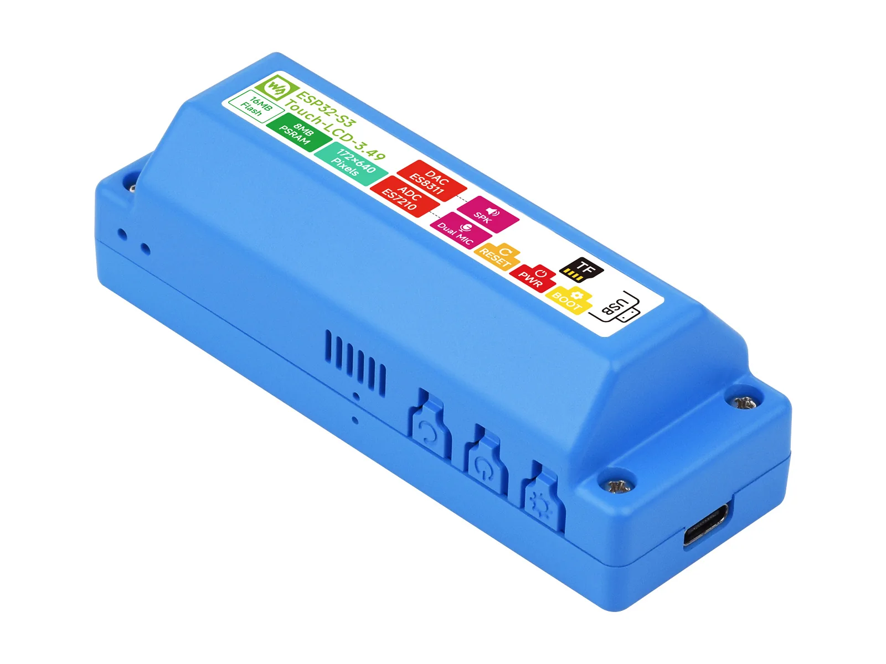

ESP32-S3-Touch-LCD-3.49
Waveshare · ESP32-S3 High-Performance Development Board With 3.49inch IPS Capacitive Touch Display, 172 × 640 Resolution, Integrated With ESP32-S3R8 Dual-core Processor | E
ESP32-S3-Touch-LCD-3.49 is a 3.49" 172x640 LCD Capacitive touch ESP32 display board by Waveshare based on the ESP32-S3 with 16MB flash, 8MB PSRAM.
Features, ports & interfaces
- QSPI display
- Capacitive touch
- 8 MB PSRAM
- 16 MB flash
- microSD (TF) card slot
- Wi-Fi 4 (802.11 b/g/n, 2.4 GHz) – version from the ESP32-S3 datasheet
- Bluetooth 5 (LE) – version from the ESP32-S3 datasheet
- Microphone: high-performance, low-power audio ADC, supports multiple microphone inputs
- Battery: Enables power control via software configuration when using Lithium battery for power supply
- IMU: QMI8658 – 3-axis gyroscope and 3-axis accelerometer, suitable for applications such as attitude sensing and motion recognition
Specifications
| Parameter | Value | Source |
|---|---|---|
| Screen size | 3.49" | source |
| Resolution | 172x640 | source |
| Panel | LCD | source |
| Shape | Rectangular | |
| Display interface | QSPI | source |
| Display driver | AXS15231B | source |
| Touch | Capacitive | source |
| MCU / SoC | ESP32-S3 | source |
| MCU family | ESP32-S3 | source |
| Flash | 16MB | source |
| PSRAM | 8MB | source |
| Wi-Fi | 2.4GHz Wi-Fi (802.11 b/g/n) | source |
| Bluetooth | Bluetooth 5 (LE) | source |
| Category | Waveshare ESP32 touch LCD | |
| Battery | Enables power control via software configuration when using Lithium battery for power supply | source |
| Display | LCD | source |
| IMU | QMI8658 – 3-axis gyroscope and 3-axis accelerometer, suitable for applications such as attitude sensing and motion recognition | source |
| Microphone | high-performance, low-power audio ADC, supports multiple microphone inputs | source |
| SD / TF | TF card slot | source |
| Vendor | Waveshare |
Official links & documentation
Notes
- Auto-added by the monthly scraper on 2026-11-24 from the official product page; values are copied verbatim from that page, fields it does not state are empty. Not yet hand-reviewed.